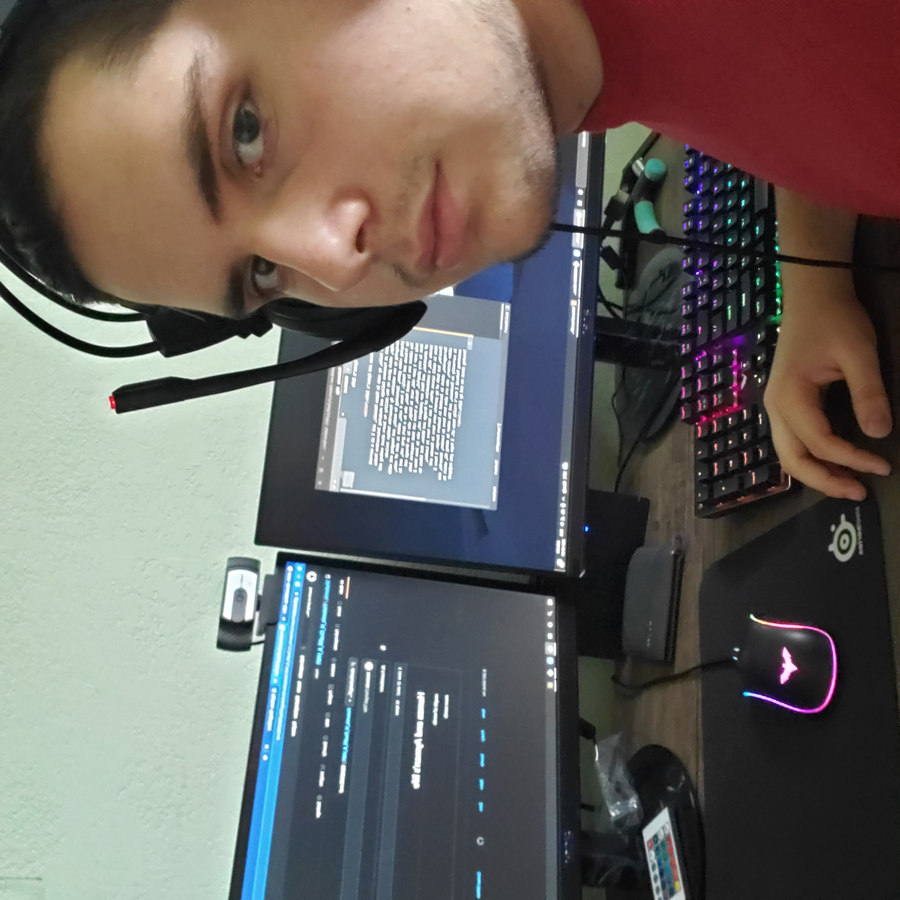

Hello, my name is Hamza Hatemic, and I am a current student at Fanshawe College and studying Interactive Media Design, which gives me the ability to learn about coding and designing my own websites. My favourite hobbys include playing video games, listening to music, and hanging out with my friends and family. I have 4 cats, which is alot of cats, The oldest one is named Medo, she is a dark grey cat, and is only over 1 year old, next is Gingy, who is an Orange cat that is very playful, Mocha, a brown cat that requires lots of attention, and Mini our youngest cat, who is less than 2 months old, a combination of Orange and White. And likes to hide in small spaces often. I was born here in London, Ontario, but both of my parents were born in Bosnia and Herzegovina, which is located in Eastern Europe. I have 2 older sisters, who are also born here in London, Ontario, one is currently in Business, and the other is doing HR, which is something Medical I don't really know of. I hope you enjoyed knowing about me and my life.
